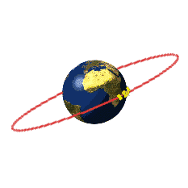
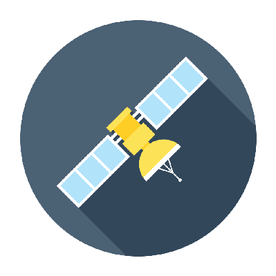

Satellite Alert System
About
Welcome to the Satellite Alert System!\n\nDiscover real-time satellite tracking and information:\n\n1. Explore the numbered dots on the map representing satellites in orbit.\n2. Check the pass table for detailed information on each satellite, including their names and upcoming passes.\n3. Stay informed about satellite activities and positions.\n\nFor any inquiries or assistance, feel free to contact us', 'System Information')" style="width: 75px; height: 75px; margin-left: 350px; cursor: pointer;">
Welcome to the Satellite Alert System!\n\nDiscover real-time satellite tracking and information:\n\n1. Explore the numbered dots on the map representing satellites in orbit.\n2. Check the pass table for detailed information on each satellite, including their names and upcoming passes.\n3. Stay informed about satellite activities and positions.\n\nFor any inquiries or assistance, feel free to contact us', 'System Information')" style="width: 75px; height: 75px; margin-left: 350px; cursor: pointer;">
Contact
Hey there! I\'m Shehab Beram, also known as Shehbov on Github.
Explore my coding adventures and projects there.
If you have ideas, questions, or just want to chat, feel free to reach out at
shehabberam20@gmail.com.
Let\'s connect and create something awesome together!', 'Contact Information')">
Hey there! I\'m Shehab Beram, also known as Shehbov on Github.
Explore my coding adventures and projects there.
If you have ideas, questions, or just want to chat, feel free to reach out at
shehabberam20@gmail.com.
Let\'s connect and create something awesome together!', 'Contact Information')">